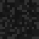

Gamemodes

Creative Mode
-Unlimited amount of resources-
-The player is immortal-
-The player can take resources from the inventory-
-The player cannot harm his health-
-The player can build and destroy-
-The player can fly-
To switch the gamemode, you need to go to the game settings!
Copyright 2023-2024 Tirezor